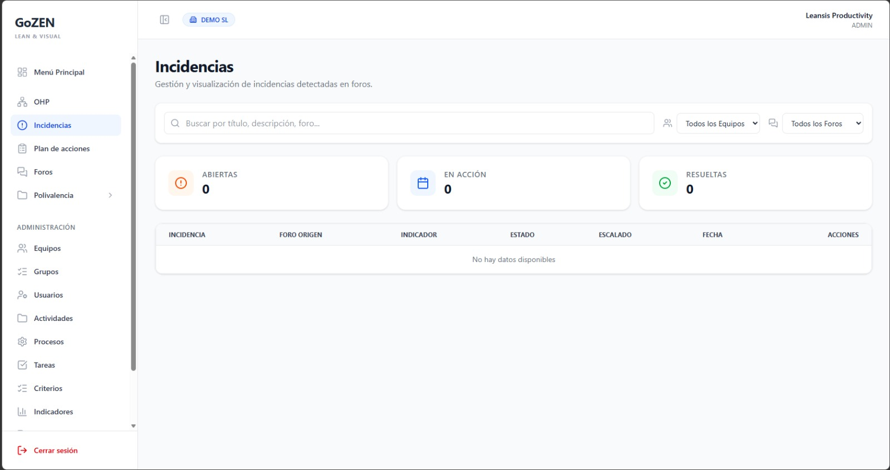

GoZEN
Plataforma de gestión Lean & Visual para equipos industriales. Controla la producción, gestiona competencias y cierra el ciclo de mejora continua desde un único entorno digital.
Explorar la Interfaz
Funcionalidades Clave
Control de producción hora a hora
Registra y compara en tiempo real la producción real frente al objetivo de cada franja horaria. Detecta desviaciones al instante y actúa antes de que afecten al resultado del turno.
- Registro de producción por turno y hora con confirmación inmediata
- Comparativa objetivo vs. real con indicador visual de desviación
- Resumen acumulado del turno y alerta automática ante caídas de rendimiento
Seguimiento del ciclo completo de mejora
Crea, asigna y monitoriza todas las acciones de mejora en un único panel. Cada tarea tiene responsable, plazo y evidencias, cerrando el ciclo PDCA con trazabilidad de principio a fin.
- Creación de acciones vinculadas a foros o incidencias
- Estados de avance: pendiente, en curso, cerrada
- Cierre con evidencias adjuntas y registro histórico completo
Matriz visual de competencias del equipo
Visualiza de un vistazo el nivel de cada operario en cada puesto. Identifica brechas de cobertura, planifica la formación necesaria y garantiza que ningún puesto quede sin cubrir.
- Mapa visual de habilidades por operario y puesto actualizable en tiempo real
- Cuatro niveles de competencia configurables, desde en formación hasta experto
- Detección automática de brechas formativas y puestos sin cobertura mínima
Configuración completa de la plataforma
Gestiona usuarios, equipos, roles y todos los datos maestros desde un panel centralizado. Adapta GoZEN a la estructura real de tu planta sin necesidad de soporte técnico externo.
- Alta y gestión de usuarios con asignación de roles y equipos
- Configuración de actividades, procesos, tareas e indicadores
- Control de accesos por equipo con separación de permisos por rol
Debate estructurado y mejora colaborativa
Canaliza las ideas del equipo en foros organizados por área o proyecto. Las propuestas se votan, priorizan y pueden convertirse en acciones del plan de mejora con un solo clic.
- Hilos de debate por área, proceso o proyecto con comentarios del equipo
- Valoración y priorización de propuestas por los propios participantes
- Conversión directa de entradas en acciones del Plan de Acciones

Registro y resolución ágil de incidencias
Abre, clasifica y resuelve incidencias operativas con total trazabilidad. El panel muestra en tiempo real cuántas están abiertas, en acción o resueltas, y permite escalarlas cuando es necesario.
- Panel de estado con contadores en tiempo real: abiertas, en acción y resueltas
- Filtrado por equipo, foro de origen e indicador afectado
- Escalado a niveles superiores y cierre con evidencias adjuntas